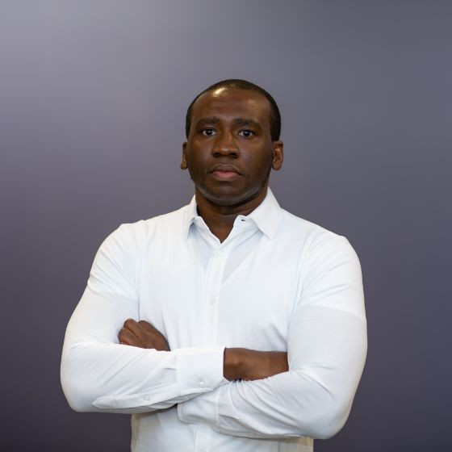
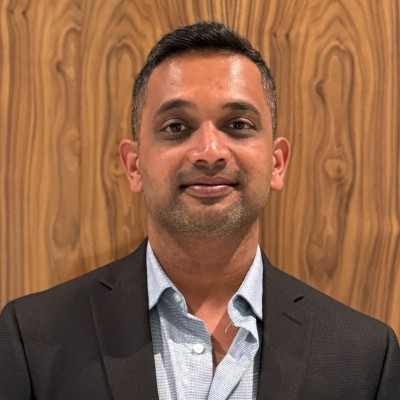
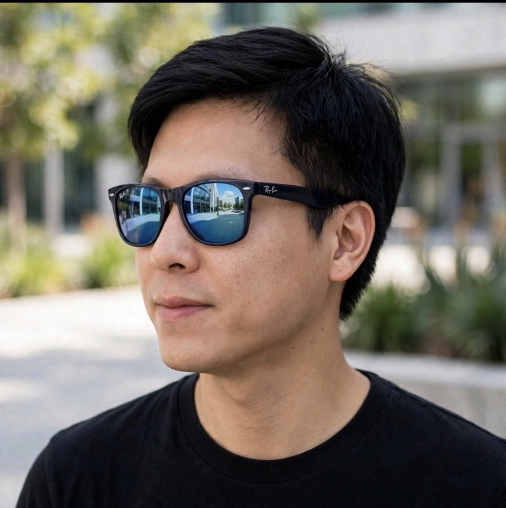
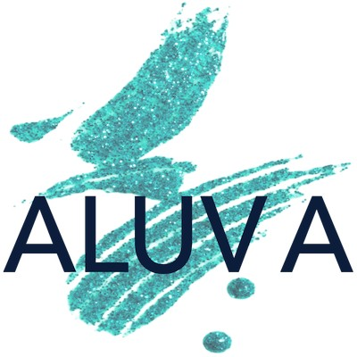
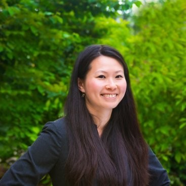
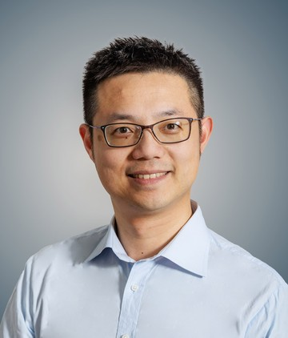
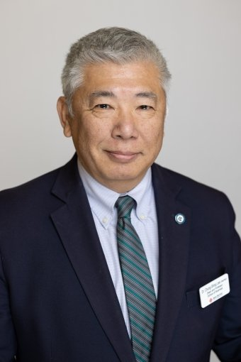
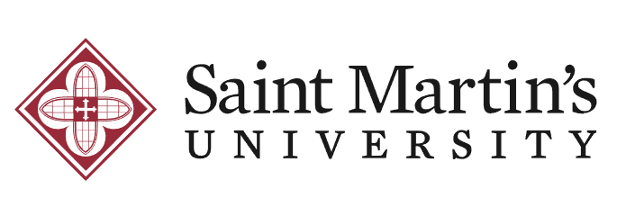
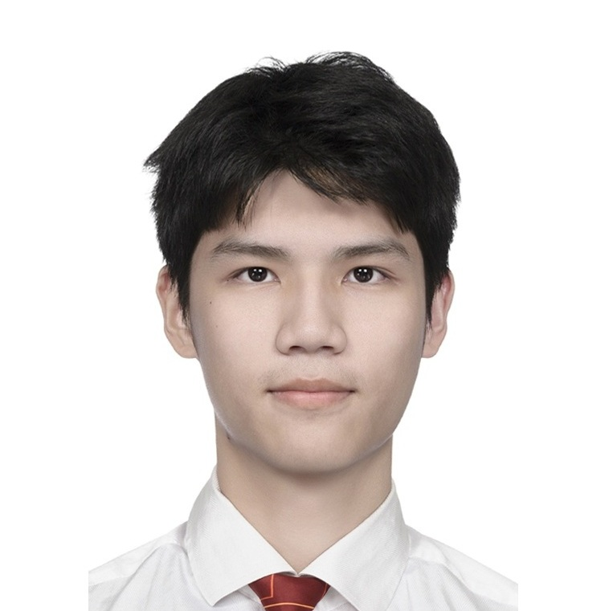
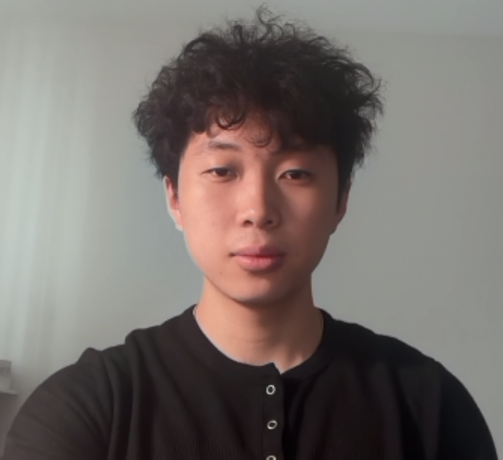

Companies with a challenge
Bring a meaningful, non-urgent business question, context, and a point of contact for feedback.
Register interest →Taiwan × Seattle · Real company challenges
We are bringing together students, companies, educators, and mentors for projects across Taiwan and Seattle. Companies contribute a business question; students research it, test an idea, and share what they learn. We are looking for collaborators to help shape the first projects.
How it works
Undergraduate and graduate students work together on a company question, with guidance from educators and mentors. Here is how we expect a project to work.
Clarify the problem, desired outcome, constraints, available data, and what may be shared publicly. Bring questions that matter and leave room to explore.
Match students' disciplines, experience, and availability to the challenge. Faculty link the project to coursework and assessment; campus ambassadors connect students and opportunities.
Interview users, research, prototype, and test. Mentors review key decisions and tradeoffs while students document and improve the work.
Share a useful outcome with the company and prepare a portfolio story: the problem, decisions, prototype, validation, and lessons learned.
We are also exploring an exchange that combines preparation in Taiwan with collaboration in Seattle. Dates, costs, credits, and participating schools are still to be confirmed.
Read the exchange proposal →Join the network
Bring a meaningful, non-urgent business question, context, and a point of contact for feedback.
Register interest →Apply what you're learning to a real problem and work with teammates across campuses.
Register interest →Share your experience through project feedback or a team conversation. We'll shape your involvement around your interests and availability.
Register interest →Connect students, faculty, and campus communities with project opportunities.
Register interest →Offer a preparatory course, academic guidance, credits, or assessment.
Register interest →Connect courses, labs, career programs, or resources to deepen the collaboration.
Register interest →Introduce potential collaborators, share opportunities, or offer resources.
Register interest →Mentors & campus ambassadors
Industry mentors review problem framing, key decisions, and evidence at key checkpoints. Campus ambassadors connect students, faculty, and campus communities with project opportunities.
Our mentors have expressed interest in supporting student teams. Availability and involvement are confirmed for each project.
Associate Professor of Computer Science, Purdue University Fort Wayne
Director, Purdue Quantum AI Security Lab; member of the Purdue Quantum Science and Engineering Institute
Quantum computing and AI: quantum machine learning, optimization, cybersecurity, and responsible quantum technology. Founder of MindGPA.
Purdue Quantum profile ↗LinkedIn ↗Professor of Physics, University of Washington
Adjunct Professor of Electrical & Computer Engineering; Director, NSF HDR Institute A3D3
Experimental particle physicist working on real-time AI for data-intensive scientific discovery.
A3D3 Institute ↗LinkedIn ↗
Founder, OLONS
MS Computer Engineering, University of New Mexico (2020)
Building OLONS Proto, an AI advisor that learns your business in one conversation, then builds your website live.
Founder, Refine
AI-powered corporate training through adaptive 6-minute AI simulation lessons that turn company knowledge into execution.

Founder & CEO, Quantum Ready
Enterprise AI and data architecture
Bringing advanced AI, quantum-inspired methods, and modern data platforms into practical business applications.
Quantum Ready ↗LinkedIn ↗
Applied Research Scientist, Meta
Computer science PhD; National Taiwan University alumnus
10+ years in computer vision, face recognition, and deep learning, bridging research and industry.
LinkedIn ↗Software Engineer, Google
Greater Seattle Area
Educational background at the University of Washington.
Founder & CEO, ALUVA
US–Asia entrepreneurship, strategy, and industrial AI
Over 20 years building ventures and leading global programs, including at Microsoft, across the U.S. and Asia. ALUVA captures expert know-how and delivers cited guidance for semiconductor, defense, aerospace, and advanced manufacturing teams.

Campus ambassadors are listed in the order they agreed to participate.

Faculty, School Psychology, Central Washington University
School psychologist; research in classroom management, social-emotional measurement, and ADHD. Former teacher in Taiwan and Fulbright recipient.
University profile ↗LinkedIn ↗
Assistant Professor, Department of Kinesiology, Seattle University
Biomechanist (PhD, Boston University) using high-precision movement tracking and medical imaging to explore therapies for musculoskeletal conditions. Trained in Taiwan.
University profile ↗LinkedIn ↗
Dean, School of Business, Engineering and Technology, Saint Martin's University
Professor of Business
D.Sc. in Engineering and Technology Management from George Washington University; M.A. in Economics from the University of Maryland; B.A. in Economics from National Taiwan University.


Electrical Engineering student, University of Toronto
Undergraduate Student Researcher, PECULAB LLC
Research experience in quantum machine learning, comparing QLSTM and Recursive QLSTM for short-horizon temperature forecasting. Presented the research at IEEE Quantum Week 2026.
LinkedIn ↗
Informatics (Data Science) student, University of Washington
Business minor
Focuses on data analysis, visualization, and AI applications to support smarter business and product decisions.
LinkedIn ↗Engineering student, University of Washington
Graphic Design / Public Relations Officer, Taiwanese Student Association
Experience in robotics engineering and programming, research on health topics, and student community engagement. Co-founded The Warning Sign to promote health awareness in schools.
LinkedIn ↗Community interest
This tally counts expressions of interest, not confirmed participation. Institutions includes companies; supporters includes mentors and campus ambassadors.
Get involved
Bring a business challenge, mentor a team, connect us with a campus, co-teach, support an exchange, or join as a student. Tell us your context, what you can contribute, and your availability so we can explore a suitable first collaboration.